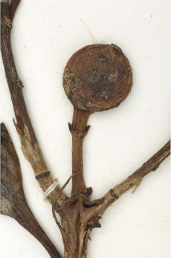
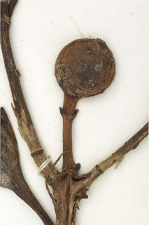

Small trees up to 5 m tall.
5 ಮೀ. ಎತ್ತರದವರೆಗಿನ ಸಣ್ಣ ಗಾತ್ರದ ಮರಗಳು.
Small trees up to 5 m tall.
சிறிய மரம் 5 மீ. உயரம் வரை வளரக்கூடியது.
Young branchlets quadrangular, glabrous.
ಎಳೆಯ ಕಿರುಕೊಂಬೆಗಳು 4- ಕೋನಗಳ ಸಮೇತವಿದ್ದು ರೋಮರಹಿತವಾಗಿರುತ್ತವೆ.
Young branchlets quadrangular, glabrous.
சிறிய நுனிக்கிளைகள் குறுக்குவெட்டுத் தோற்றத்தில் நான்கு கோணங்களுடையது, உரோமங்களற்றது.
Leaves simple, opposite, decussate; stipule large, lanceolate, interpetiolar, caducous and leaving scar; petiole 1-1.3 cm long, planoconvex in cross section, glabrous; lamina 6-8.5 x 2.7-3.2, elliptic, elliptic-obovate, apex obtuse, base attenuate, margin entire and revolute, coriaceous, glabrous; midrib raised above; secondary_nerves ca. 7 pairs; tertiary_nerves obscure.
ಎಲೆಗಳು ಸರಳವಾಗಿದ್ದು ಕತ್ತರಿಯಾಕಾರದ ಅಭಿಮುಖ ಜೋಡನಾ ವ್ಯವಸ್ಥೆಯ -ಲ್ಲಿರುತ್ತವೆ ; ಕಾವಿನೆಲೆಗಳು ದೊಡ್ಡಗಾತ್ರದವುಗಳಾಗಿದ್ದು ತೊಟ್ಟುಗಳ ನಡುವೆ ಇದ್ದು ಉದುರಿ ಹೋದ ನಂತರ ಗುರುತುಗಳನ್ನು ಉಳಿಸುತ್ತವೆ; ತೊಟ್ಟು 1 – 1.3 ಸೆಂ.ಮೀ. ವರೆಗಿನ ಉದ್ದವಿದ್ದು,ಅಡ್ಡ ಸೀಳಿದಾಗ ಸಪಾಟ ಪೀನ ಮಧ್ಯದ ಆಕಾರದಲ್ಲಿರುತ್ತದೆ ಮತ್ತು ರೋಮರಹಿತವಾಗಿರುತ್ತದೆ; ಪತ್ರಗಳು 6 -8.5 X 2.7–3.2 ಸೆಂ.ಮೀ. ಗಾತ್ರ, ಅಂಡವೃತ್ತ, ಅಂಡವೃತ್ತ- ಬುಗುರಿಯ ಆಕಾರ ಹೊಂದಿದ್ದು, ಚೂಪಲ್ಲದ ತುದಿ, ಒಳಬಾಗಿದ ಬುಡ, ನಯವಾದ ಮತ್ತು ಹಿಂಸುರುಳಿಗೊಂಡ ಅಂಚು, ತೊಗಲ್ಲನ್ನು ಹೋಲುವ ಮೇಲ್ಮೈ ಹೊಂದಿದ್ದು ರೋಮರಹಿತವಾಗಿರುತ್ತವೆ;ಮಧ್ಯನಾಳ ಮೇಲ್ಭಾಗದಲ್ಲಿ ಉಬ್ಬಿರುತ್ತದೆ; ಎರಡನೇ ದರ್ಜೆಯ ನಾಳಗಳು ಅಂದಾಜು 7 ಜೋಡಿಗಳಿರುತ್ತವೆ; ಮೂರನೇ ದರ್ಜೆಯ ನಾಳಗಳು ಅಸ್ಪಷ್ಟ.
Leaves simple, opposite, decussate; stipule large, lanceolate, interpetiolar, caducous and leaving scar; petiole 1-1.3 cm long, planoconvex in cross section, glabrous; lamina 6-8.5 x 2.7-3.2, elliptic, elliptic-obovate, apex obtuse, base attenuate, margin entire and revolute, coriaceous, glabrous; midrib raised above; secondary_nerves ca. 7 pairs; tertiary_nerves obscure.
இலைகள் தனித்தவை, எதிரடுக்கமானவை, குறுக்குமறுக்கானவை; இலையடிச்செதில் பெரியவை, ஈட்டி வடிவானது, இலையடிச்செதில் இருஇலைக்காம்பிற்கு நடுவே (இண்டர்பீட்டியோலார்) உடையது, எளிதில் உதிரக்கூடியது மற்றும் தழும்புகளை ஏற்படுத்துகின்றன; இலைக்காம்பு 1-1.3 செ.மீ. நீளமானது, குறுக்குவெட்டுத் தோற்றத்தில் பிளேனோகான்வக்ஸ், உரோமங்களற்றது; இலை அலகு 6-8.5 X 2.7-3.2 செ.மீ., நீள்வட்ட வடிவானது, நீள்வட்டம்-தலைகீழ் முட்டை வடிவானது, அலகின் நுனி மெட்டையானது, அலகின் தளம் அட்டனுவேட், அலகின் விளிம்பு முழுமையானது மற்றும் பின்புறம் வளைந்து (ரெவலுட்) காணப்படும், கோரியேசியஸ், உரோமங்களற்றது; மையநரம்பு மேற்புறத்தில் அலகின் பரப்பைவிட உயர்ந்து இருக்கும்; இரண்டாம் நிலை நரம்புகள் 7 ஜோடிகள்; மூன்றாம் நிலை நரம்புகள் மற்றும் பிற நரம்புகள் கண்களுக்கு புலப்படாது.
Flowers large, unisexual; male flowers in few flowerd corymbs; female flowers white or rose, solitary or in pairs, terminal; pedicel ca. 1.5 cm long.
ಹೂಗಳು ದೊಡ್ಡ ಗಾತ್ರದವು ಹಾಗೂ ಏಕಲಿಂಗಿಗಳು;ಗಂಡು ಹೂಗಳು ಸಂಖ್ಯೆಯಲ್ಲಿ ಕೆಲವು ಇದ್ದು ನೀಳಛತ್ರ ಪುಷ್ಪಮಂಜರಿಗಳಲ್ಲಿರುತ್ತವೆ;ಹೆಣ್ಣು ಹೂಗಳು ಬಿಳಿ ಅಥವಾ ಗುಲಾಬಿ ಬಣ್ಣದಲ್ಲಿದ್ದು ಒಂಟಿಯಾಗಿ ಅಥವಾ ಜೋಡಿಗಳಾಗಿ ತುದಿಯಲ್ಲಿರುತ್ತವೆ;ತೊಟ್ಟು ಅಂದಾಜು 1.5 ಸೆಂ.ಮೀ. ಉದ್ದವಿರುತ್ತವೆ.
Flowers large, unisexual; male flowers in few flowerd corymbs; female flowers white or rose, solitary or in pairs, terminal; pedicel ca. 1.5 cm long.
மலர்கள் பெரியவை, ஓர் பாலானவை; ஆண் மலர்கள் குறைந்த மலர்களுடைய கோரியம்ப் வகை மஞ்சரி; பெண் மலர்கள் வெள்ளை அல்லது ரோஸ் நிறமானது, தனித்தவை அல்லது ஜோடிகள், தண்டின் நுனியில் காணப்படும்; மலர்காம்பு 1.5 செ.மீ. நீளமானது.
Berry, globose, ca. 2 cm across, 2-celled; seeds many.
ಬೆರ್ರಿಗಳು ಗೋಳಾಕಾರದವುಗಳಾಗಿದ್ದು ಅಂದಾಜು 2 ಸೆಂ.ಮೀ.ಅಡ್ಡಗಲತೆಯನ್ನು ಹೊಂದಿದ್ದು 2 ಕೋಶಗಳನ್ನೊಳಗೊಂಡಿರುತ್ತವೆ;ಬೀಜಗಳು ಹಲವಾರು.
Berry, globose, ca. 2 cm across, 2-celled; seeds many.
முழுச்சதைகனி (பெர்ரி), கோள வடிவமானது, 2 செ.மீ. குறுக்களவுடையது, 2-அறைகளுடையது; விதைகள் எண்ணற்றது.

 
